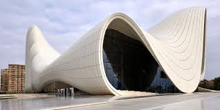

TRIBUTE TO ZAHA HADID

BIOGRAPHY
Zaha Hadid was a true visionary in the world of architecture. Her bold and innovative
designs pushed the boundaries of what was possible, and she left a lasting impact on
the industry. From the curved lines of the Guangzhou Opera House to the dramatic angles
of the London Aquatics Centre, her buildings were not only beautiful, but also functional
and sustainable. She was the first woman to receive the Pritzker Architecture Prize, and
her contributions to the field will be remembered for many years to come.
Queen of the Curve
Dame Zaha Mohammad Hadid was an Iraqi-British architect,artist and designer,
recognised as a major figure in architecture of the late-20th and early-21st centuries.
Born in Baghdad, Iraq, Hadid studied mathematics as an undergraduate and then enrolled
at the Architectural Association School of Architecture in 1972. In search of an alternative
system to traditional architectural drawing, and influenced by Suprematism and the Russian
avant-garde,Hadid adopted painting as a design tool and abstraction as an investigative
principle to reinvestigate the aborted and untested experiments of Modernism to unveil new
fields of building
Projects Completed
-
 -

-

REFERENCE
Wikipedia. (2022). "Tribute to Zaha Hadid."Retrieved on January 28th, 2023 from
Read More